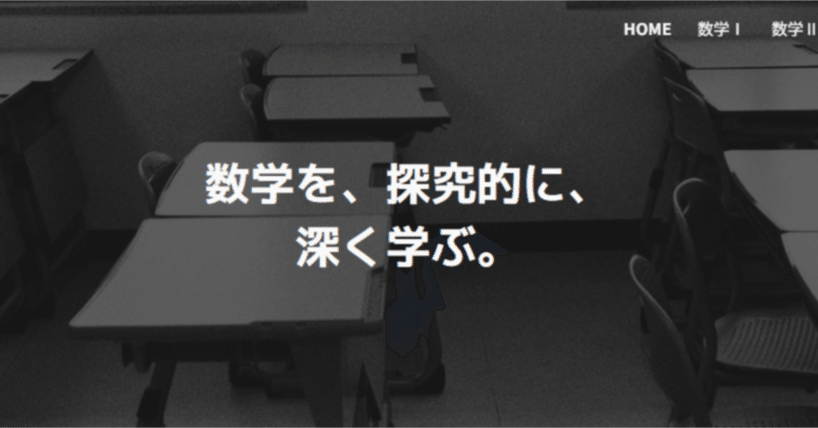

BOOK
未来を拓く 高等学校数学「探究的な学び」の授業づくり
探究的な学びの考え方から、目標設定、教材研究、生徒の考えを生かす授業の手立てまで、詳しくは著書『未来を拓く 高等学校数学「探究的な学び」の授業づくり』で紹介しています。
書籍の紹介・目次を見る ↗はじめての方へ
学んだ知識や技能を活用して問いを明らかにすることだけでなく、問いを追究する過程で新たな数学を学ぶことも数学の探究的な学びの一つの姿です。このサイトでは、探究を通して数学を深く理解し、生きて働く知識及び技能と数学的に考える資質・能力を育む授業づくりを大切にします。
「なぜだろう」「確かめたい」「どうすればよいだろう」。探究の出発点にあるのは、生徒自身の知的好奇心や目的意識の喚起です。問いは教師が提示しても構いません。大切なのは、生徒が「何を明らかにしたいのか」「なぜそれを考えるのか」を自分のこととして捉えることです。問題に取り組む途中や、学びを振り返る中で、問いが生まれることもあります。
教師が内容や解き方を説明する前に、生徒が既に知っていることを手がかりに、自分なりに考えてみる場面をつくります。最初から解決し切る必要はありません。気付きや予想だけでなく、ここで疑問や困り感が生じることが生徒にとって「自分事」となることを促し、他者との協働や教師の説明から学ぶ土台になります。
自分や他者の考えを取り上げ、比べたり、その理由や意味を問い直したりすることで、理解を深めていきます。教師は生徒の考えを見取り、数学的に大切なことへ議論をつなぎます。こうしたやり取りを通して、数学の内容とともに、どこに着目し、どのように考えるとよいのかを学び、新たな問いへとつなげていきます。
BOOK
探究的な学びの考え方から、目標設定、教材研究、生徒の考えを生かす授業の手立てまで、詳しくは著書『未来を拓く 高等学校数学「探究的な学び」の授業づくり』で紹介しています。
書籍の紹介・目次を見る ↗